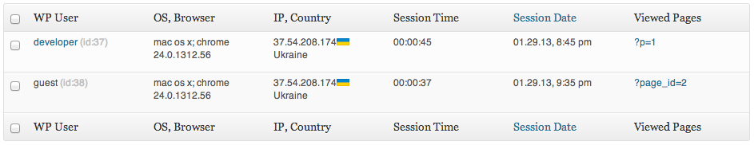

Spy Analytics v.1.3 (PRO)
Unlock it for *free* inside plugin page
This documentation was made only with the Documenter (except the images)
What is this?
The Spy Analytics is a WP plugin that allows you to record and analyze visitor actions on your WP website
Features
-
Record and view mouse actions (mouse movement and mouse buttons clicks)
-
Record and view window scroll and resize actions
Installation
-
Download the ZIP package from CodeCanyon.
-
Open WordPress admin and go to Plugins -> Add New -> Upload. Browse for the ZIP file spy-analytics-plugin.zip on your computer and hit “Install Now”.
-
Activate the plugin.
Spy Analytics requires WordPress v3.1.+
Customization
Customization Spy Analytics available on Spy Analytics - Settings WP admin menu. You can set properties:
-
Record status
Use this checkbox to enable/disable recording on the pages that you set below (see #2)
-
Record user actions
This option allows you to specify pages where the recording will be enabled
-
Record settings
You can enable/disable recording for some actions
-
Send interval
Interval in seconds that mean how often requests with recorded data will be sent to the DB. If your website has more than 10 visitors in the same time I recommend to set it to 5
-
Start new session if delay more than
If the user will be inactive in the next N seconds you may say that his previous session expired and the next time new session will be created
Usage
Table
Recorded sessions available on Spy Analytics - Analytics section.

Understanding table
-
WP User column - link to user profile, if registered
-
OS, Browser column - Visitor's info: Device, OS, Browser Version
-
User IP, Country column - Visitor's IP address, Country, Country flag
-
Session Time column - Visitor's time, how long he was on your website
-
Session Date column - When the session was registered
-
Viewed Pages column - Pages in order, how visitors followed pages
-
Options column - hit the eye button to view session; hit delete button to remove session
Spy View Player Controls
Understanding player
-
Visitor's Info.
-
A dropdown list of pages where actions were recorded.
-
Playing speed
-
Play/Stop button.
-
Progress bar. You can click on it to set specific time point. Vertical lines mean some visitor action. White line - mouse move, page scroll, page resize. Red line - mause left button click. Blue line - right mouse click
-
Timer.
-
Recorded size of visitor's browser window.
Quick Start Guide
-
Install Spy Analytics (see INSTALLATION section)
-
Open Spy Analytics - Settings. Check Enable record checkbox (see CUSTOMIZATION section). Save settings
-
After a while, open Spy Analytics - Analytics page. If you have recorded session you will see it in the table. If there are no sessions you can record your own, just open any page of your website (if you selected "All posts and pages" on Spy Analytics - Settings) and make mouse/scroll manipulations
-
Choose one of recorded session in the sessions table. Put mouse cursor over Session ID value to open session menu. Click Spy View link. Spy Player page will opens in new tab/page.
-
Click Play button (see USAGE section) to view recorded actions.
Source & Credits
Thanks so much to